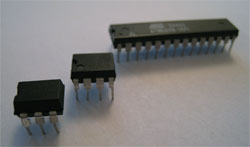
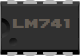
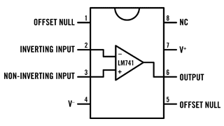

The DIL Package generator script is the most complex script in this PDK. It removes almost all of the pain of creating a new a DIL Package IC. … But wait … What’s a DIL Package IC?

Dil Package IC’s are all chips (IC: integrated circuit) or other parts that come in this shape of a black flat block with pins sticking out from each side. The DIL package has it’s pins lined up on the 0.1” grid (tenth of an inch), so it’s easy to stick them into a breadboard. A lot of IC’s come in a package like this, so you can easily do prototypes. Most of those IC’s are also available as smaller surface mounted (SMT) packages, but they can be much harder to solder by hand and experiment with.
There exist a lot of different IC’s out there. That is exactly the reason why we deliberately didn’t try to put all of these into Fritzing from the start. However, this DIL Package generator tool allows you to create your own IC parts, as you need them, with a minimum of effort.
The tool itself creates a folder with a name you provide; it creates the partdescription.xml file therein; and it also creates all image files necessary. After you created those, you just have to make some changes to the partdescription.xml file to make the new part complete. These are the steps you follow to create and use your new DIL Package IC part.
generator.py script with title and number of pins as argumentspartdescription.xml in the newly created directory.partdescription.xml filelibaries/user folder in your Fritzing distribution
To explain the details of this process and of the DIL Package generator tool lets create a little example part. Let’s create a LM741, a fairly standard opAmp, which stands for Operation Amplifier. We’re not going into the details here about what an opAmp is or what you can do with it, there are far better places on the internet for this. We’re just gonna create the Fritzing part of this opAmp.
We need a name for it, so just let’s call the part opAmp. Maybe this is not the best name imaginable, because there exist a lot of different opAmps. So maybe ‘singleOpAmp’ or ‘opAmp741’ would be better, but for this example, we’ll just stick with ‘opAmp’.
Our opAmp is an 8-pinner (it has 4 pins on each side). Easy.
Because we want our new part to be loaded in Fritzing, we create the part folder in the libraries/user folder directly. In my case I copied my Fritzing distribution into my /Applications folder. Of course we could also play it safe and create the part somewhere else first and then copy it over to the libraries/user folder later.
Since we’re creating the new opAmp part folder from a different location as where the generator.py tool can be found, we also have to tell the python command where this generator.py script can be found. In this example, let’s assume we just downloaded the PDK to our Desktop, so its path gonna be something like ~/Desktop/FritzingPDK/Tools/DilPackageGenerator/generator.py
Finally let’s decide what text we want to see on our new part. There is not much space on a 8-pinner, so “LM741” seems best.
% cd /Applications/fritzing-0005/libraries/user
% python ~/Desktop/FritzingPDK/Tools/DilPackageGenerator/generator.py \
> OpAmp 8 "LM741"
This creates a folder named OpAmp in /Applications/fritzing-0005/libraries/user with all the necessary files. Next let’s get the partdescription.xml file in shape.
Let’s first make the partdescription.xml a bit more specific to our part. In the xml there are 6 tags that deal with identity.
In the generated xml we get from the generate.py tool, these tags are defined like this:
OpAmp
IC.Logic
OpAmp
Please describe your part here
IC
add a url here pointing to your reference
Add Your Name Here
So let’s change them into something more sensible and specific:
OpAmp
IC.Analog
Operational Amplifier
An op-amp can linearly amplify a signal
OA
http://en.wikipedia.org/wiki/Op-amp
John Doe
Finally we want to name the pins correctly, so we can use this useful information apart from just the pin number. For this we need to look into the part’s datasheet. In the datasheet you should be able to find a diagram of the pin layout. This is the one for the OpAmp:

So we can use the names in there to name the pins in the partdescription.xml. Note how the numbers are counted up in anti-clockwise order.
Save and close the partdescription.xml file.
So now the part is ready and you can test in inside Fritzing by relaunching Fritzing.
This script creates Fritzing DIL-Package IC parts. It generates the images and the
partdescription.xml file for those parts in a part folder.
python generator.py [-f] TITLE [numberOfPins [ "text on chip" [wideOrNarrow]]]
-f flag is not used the script will exit.wide' or 'narrow'. Narrow means bridging 3 rows. Wide means bridging 6 rows. If omitted 'narrow' will be used. (In fact, narrow is the only one working, yet, sorry)
For more information on how to create parts and how to use them in Fritzing,
please read the online documentation:
http://fritzing.org/learning/parts